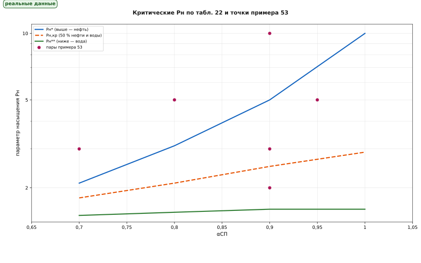

Путь › Нефть или вода: характер насыщения › Шаг 24 из 34
Глинистость меняет пороги насыщения
В книге: «Критерии насыщения для глинистых коллекторов (примеры 51–53, табл. 22)» стр. 100
Опирается на: шаг 23 «Зона неопределённости насыщения» (предпосылка, переход к данным), шаг 8 «Какой метод для какой задачи» (предпосылка)
Суть
У глинистого коллектора свои пороги насыщения: чем больше глинистость, тем ниже критические Pн.
Поэтому для глинистого коллектора нужен третий параметр — геофизический показатель глинистости, например αСП.
Решение принимают по паре (Pн, αСП): точку наносят на график и смотрят её область.
Пороговая идея. У глинистого коллектора пороги насыщения свои: для решения нужен третий параметр — геофизический показатель глинистости. модель
Как это работает
Задача примера 51
Пример 51: терригенные межзерновые коллекторы различаются пористостью, проницаемостью и глинистостью. Нужно оценить для них критические значения Pн, kв и критерии насыщения. стр. 100
«Оценить критические значения»
Семейство зависимостей
Автор делает вывод: зависимости Pн = f(kв) и кривые фазовых проницаемостей нужны для каждого класса коллектора. Класс — группа коллекторов со сходными пористостью, проницаемостью и глинистостью. Получается семейство зависимостей при разной глинистости, как на рис. 7, б книги. стр. 100
«необходимо иметь для каждого класса коллекторов, в результате чего будет получено семейство зависимостей»
Граничные кривые
У каждого графика семейства свои критические точки. Соединим одноимённые точки (Pн*, kв*) и (Pн, kв) разных графиков. Получатся кривые, разделяющие области коллекторов, дающих нефть, нефть с водой и воду. стр. 100
«разделяющие области коллекторов, дающих при испытании нефть, нефть с водой и воду»
А точки (Pн,кр, kв,кр) образуют ещё одну кривую. Она разделяет промышленно нефтеносные и непродуктивные коллекторы. стр. 100
«разделяющую области промышленно нефтеносных и непродуктивных коллекторов»
Зачем третий параметр
Для чистого коллектора достаточно знать сопротивление и пористость. Для глинистого, по автору, нужен ещё геофизический параметр глинистости. Например, относительная амплитуда СП (αСП) — отношение амплитуды СП в пласте к максимальной. В чистом пласте αСП = 1. стр. 100
«то для определения продуктивности глинистого коллектора необходимо располагать еще значением геофизического параметра глинистости»
Таблица 22
В примере 52 пары критических значений для αСП = 1; 0,9; 0,8; 0,7 записывают в таблицу 22. Критерий kв,кр взят для коллекторов, которые при испытании дают 50 % нефти и 50 % воды. стр. 100
«находим пары значений»
«т.е. для коллекторов, дающих при испытании 50 % нефти, 50 % воды»
Пороги сильно зависят от глинистости. При αСП = 1,0 критические kв* = 30 % и Pн* = 10. При αСП = 0,7 уже kв* = 50 % и Pн* = 2,1. Значит, одно и то же Pн у разных по глинистости коллекторов означает разное насыщение. стр. 100
«1,0 | 30 | 10 | 80 | 1,6 | 58 | 2,9»

Как принимают решение
Пример 53: по паре значений (Pн, αСП) находят точку на рис. 7, б. По тому, в какую область I, II или III она попала, получают ответ. стр. 100
«По принадлежности получаемой точки к области I, II и III получаем ответы»
Ответы автора для шести пар такие. Первые две — нефтеносный коллектор, третья — нефть с небольшим количеством воды. Четвёртая — предельно нефтенасыщенный. Пятая — нефть с водой, шестая — вода с признаками нефти. стр. 100
«г) коллектор предельно нефтенасыщенный; д) коллектор при испытании даст нефть с водой; е) коллектор даст воду с признаками нефти»
По шагам
Как получить критерии для глинистых коллекторов
- Для каждого класса коллектора получите Pн = f(kв) и кривые фазовых проницаемостей. стр. 100
- Для каждого класса найдите kв*, kв,кр, kв** и соответствующие Pн. стр. 100
- Соедините одноимённые точки разных классов в граничные кривые или запишите их в таблицу. стр. 100
- Для пласта определите Pн и αСП и найдите область точки на графике. стр. 100
Разбор примеров из книги
Пример 52. Критические значения для классов по глинистости (табл. 22) стр. 100
Условие. Терригенный коллектор с зависимостями Pн = f(kв) для αСП = 1; 0,9; 0,8; 0,7 (рис. 7, б). Определить критические kв и Pн для каждого класса.
- По кривым фазовых проницаемостей каждого класса найти kв*, kв,кр, kв**.
- По графику Pн = f(kв) своего αСП найти соответствующие Pн.
- Записать пары в табл. 22; kв,кр берётся для притока 50 % нефти и 50 % воды.
Итог. Табл. 22: αСП 1,0 — kв* 30, Pн* 10, kв 80, Pн 1,6, kв,кр 58, Pн,кр 2,9; αСП 0,9 — 37, 5, 77, 1,6, 58, 2,5; αСП 0,8 — 42, 3,1, 74, 1,55, 59, 2,1; αСП 0,7 — 50, 2,1, 68, 1,5, 59, 1,8 (kв в %).
Пример 53. Насыщение по паре (Pн, αСП) стр. 100
Условие. По рис. 7, б установить характер насыщения для: а) Pн = 10, αСП = 0,9; б) Pн = 5, αСП = 0,8; в) Pн = 5, αСП = 0,95; г) Pн = 3, αСП = 0,7; д) Pн = 3, αСП = 0,9; е) Pн = 2, αСП = 0,9.
- Для каждой пары найти точку на рис. 7, б.
- Определить, в какую область (I, II, III) попала точка.
Итог. а) нефтеносный; б) нефтеносный; в) нефть с небольшим количеством воды; г) предельно нефтенасыщенный; д) нефть с водой; е) вода с признаками нефти.
Пример 51. Критерии для коллекторов разной глинистости стр. 100
Условие. Межзерновые терригенные коллекторы с различной пористостью, проницаемостью, глинистостью: оценить критические Pн, kв и критерии насыщения.
- Получить Pн = f(kв) и кривые фазовых проницаемостей для каждого класса коллекторов.
- Для каждого графика семейства (разные αСП) найти связанную воду, kв*, kв**.
- Соединить точки (Pн*, kв*) и (Pн, kв) разных графиков в граничные кривые; точки (Pн,кр, kв,кр) — в кривую промышленной нефтеносности.
Итог. Получено семейство граничных кривых, разделяющих области нефти, нефти с водой, воды и промышленно нефтеносных/непродуктивных коллекторов.
Решение на данных
Насыщение глинистого коллектора по паре (Pн, αСП)
- Параметр насыщения Pн пласта
- Параметр глинистости αСП пласта
Нанести точку (Pн, αСП) на рис. 7, б; область I, II или III даёт характер насыщения. стр. 100
Нефтеносный коллектор, нефть с водой или вода с признаками нефти — в зависимости от области.
Потренируйтесь
Дано: Pн = 10, αСП = 0,9 (Пример 53, стр. 100)
Ответ автора, пример 53а.
Дано: Pн = 3, αСП = 0,7 (Пример 53, стр. 100)
Ответ автора, пример 53г: при высокой глинистости порог Pн* низкий.
Дано: Pн = 3, αСП = 0,9 (Пример 53, стр. 100)
Ответ автора, пример 53д: то же Pн = 3 при меньшей глинистости — уже нефть с водой.
Дано: Pн = 2, αСП = 0,9 (Пример 53, стр. 100)
Ответ автора, пример 53е.
Цифры и условия
- αСП = 1,0: kв* = 30 %, Pн* = 10. стр. 100
- αСП = 0,7: kв* = 50 %, Pн* = 2,1. стр. 100
- Критерий kв,кр в табл. 22 — приток 50 % нефти и 50 % воды. стр. 100
- Условие: в чистом пласте αСП = 1; чем меньше αСП, тем глинистее пласт. стр. 100
Таблицы книги
Таблица 22 Данные к примеру 52 стр. 100
| \( a_{CII} \) | \( k_{n}^{*},\% \) | \( P_{n}^{*} \) | \( k_{n}^{**},\% \) | \( P_{n}^{**} \) | \( k_{n,sp},\% \) | \( P_{n,sp} \) |
|---|---|---|---|---|---|---|
| 1,0 | 30 | 10 | 80 | 1,6 | 58 | 2,9 |
| 0,9 | 37 | 5 | 77 | 1,6 | 58 | 2,5 |
| 0,8 | 42 | 3,1 | 74 | 1,55 | 59 | 2,1 |
| 0,7 | 50 | 2,1 | 68 | 1,5 | 59 | 1,8 |
Исправления распознавания: заголовок «a_CII» → αСП (греческая альфа и индекс СП искажены распознаванием); «k_n» в заголовках → kв (водонасыщенность), «k_n,sp»/«P_n,sp» → kв,кр/Pн,кр (по смыслу текста примера 52)
Частая ошибка модель
Ошибка: Одно и то же значение параметра насыщения означает одинаковое насыщение у любых коллекторов.
На самом деле: Критические Pн зависят от глинистости (табл. 22); для глинистого коллектора нужен ещё параметр αСП. стр. 100
Что это значит для данных модель
Для глинистых коллекторов задача насыщения трёхмерна: (сопротивление, пористость, глинистость); пороги — функция глинистости.
- Вход
- Pн (или ρп и kп), αСП
- Выход
- нефть / нефть с водой / вода / промышленно нефтеносный или нет
- Где ломается
- Без параметра глинистости пороги чистого коллектора дадут ошибки в глинистых пластах.
- гипотеза Табл. 22 можно использовать как готовую табличную функцию порогов от αСП для автоматической оценки.
Где здесь ручной труд специалиста
- Входные данные
- семейство лабораторных зависимостей по классам, αСП пластов
- Ручные шаги
- построение семейства кривых, табулирование порогов, графическое определение области
- Точки суждения
- отнесение пласта к классу по глинистости
- Время
- много графических операций
- Типичные ошибки
- применять пороги чистого коллектора к глинистому
Аналогия модель
Условный порог: граница решения зависит от третьего признака (как пороги, зависящие от сегмента пользователей).
Где аналогия перестаёт работать: Зависимость порога от глинистости построена по лабораторным кривым конкретного объекта.
Задачи из книги
- Задача 92. Определить характер насыщения коллекторов, выделяемых на основании комплекса диаграмм, приведенных на рис. 67 и 76. Нужен рисунок: 67, 76. стр. 100
- Задача 93. Определить характер насыщения коллекторов по диаграммам, представленным на рис. 14 и 68. Объяснить причины неоднозначностей сделанного заключения и способа их устранения. Нужен рисунок: 14, 68. стр. 100
- Задача 94. Определить характер насыщения коллекторов, выделяемых на основании диаграмм рис. 58 и 46. Объяснить, какими методами устанавливается характеристика удельного сопротивления пластовых вод и какую роль она играет при решении поставленной задачи. Нужен рисунок: 58, 46. стр. 100
- Задача 95. Установить характер насыщения тонкослоистого коллектора, выделяемого на основании диаграмм, приведенных на рис. 73. Объяснить, в чем трудность определения положения продуктивных и водоносных коллекторов в разрезе исследуемой скважины. Нужен рисунок: 73. стр. 100
Новые понятия
- относительная амплитуда СП (αСП) (SP deflection ratio)
- Геофизический параметр глинистости: отношение амплитуды СП в пласте к максимальной (в чистом пласте αСП = 1). стр. 100 модель
- класс коллектора (rock type)
- Группа коллекторов со сходной пористостью, проницаемостью и глинистостью и общими петрофизическими зависимостями. стр. 100 модель
Проверь себя
Верный ответ: 2,1
При высокой глинистости (αСП = 0,7) порог Pн* падает до 2,1 против 10 у чистого коллектора. Где это в тексте (стр. 100) →
Верный ответ: Сопротивление пласта; Пористость пласта; Геофизический параметр глинистости, например αСП
Для чистого коллектора хватает сопротивления и пористости, для глинистого нужен ещё параметр глинистости. Где это в тексте (стр. 100) →
Расставьте шаги получения критериев для глинистых коллекторов по порядку.
Перетащите пункты (мышью или пальцем за ⠿) или двигайте кнопками ↑ ↓.
- Соединить одноимённые точки в граничные кривые или таблицу
- Найти область точки (Pн, αСП) пласта
- Получить Pн = f(kв) и фазовые проницаемости для каждого класса
- Найти критические kв и Pн каждого класса
Верный ответ: Получить Pн = f(kв) и фазовые проницаемости для каждого класса → Найти критические kв и Pн каждого класса → Соединить одноимённые точки в граничные кривые или таблицу → Найти область точки (Pн, αСП) пласта
Сначала зависимости по классам, затем критические точки, граничные кривые и только потом решение для пласта. Где это в тексте (стр. 100) →
Источник
Все утверждения шага с дословной цитатой автора и страницей книги (по PDF).
Пример 51: оценить критерии насыщения для терригенных коллекторов разной пористости, проницаемости и глинистости. наблюдение
«Оценить критические значения»
Зависимости Pн = f(kв) и фазовые проницаемости нужны для каждого класса коллекторов — получается семейство при разной глинистости. вывод
«необходимо иметь для каждого класса коллекторов, в результате чего будет получено семейство зависимостей»
Одноимённые критические точки графиков образуют кривые, разделяющие области нефти, нефти с водой и воды. вывод
«разделяющие области коллекторов, дающих при испытании нефть, нефть с водой и воду»
Кривая критических точек второго рода разделяет промышленно нефтеносные и непродуктивные коллекторы. вывод
«разделяющую области промышленно нефтеносных и непродуктивных коллекторов»
Для чистого коллектора хватает сопротивления и пористости, для глинистого нужен ещё параметр глинистости. вывод
«то для определения продуктивности глинистого коллектора необходимо располагать еще значением геофизического параметра глинистости»
Табл. 22: при αСП = 1,0 — kв* 30 %, Pн* 10; при αСП = 0,7 — kв* 50 %, Pн* 2,1. наблюдение
«1,0 | 30 | 10 | 80 | 1,6 | 58 | 2,9»
Пример 52: пары критических значений для αСП = 1; 0,9; 0,8; 0,7 записывают в табл. 22. наблюдение
«находим пары значений»
Критерий второго рода взят для коллекторов, дающих при испытании 50 % нефти и 50 % воды. допущение
«т.е. для коллекторов, дающих при испытании 50 % нефти, 50 % воды»
Пример 53: по точке (Pн, αСП) на рис. 7, б и области I, II, III получают характер насыщения. наблюдение
«По принадлежности получаемой точки к области I, II и III получаем ответы»
Ответы примера 53: нефтеносный; нефтеносный; нефть с небольшим количеством воды; предельно нефтенасыщенный; нефть с водой; вода с признаками нефти. наблюдение
«г) коллектор предельно нефтенасыщенный; д) коллектор при испытании даст нефть с водой; е) коллектор даст воду с признаками нефти»